Data Entry KPI Target Manager · version 2.1
The complete guide
Define KPIs, enter one annual target per facility, and let the system split it into daily, weekly, monthly and quarterly targets. The seasonal curves are ones you design, or ones derived from historical data by a small machine-learning model race.
This guide walks through every screen with annotated screenshots. Then it explains the calculation engine, the REST API, the MCP server for AI agents, configuration, operations and troubleshooting. Hover over or tap a numbered callout to highlight its element. Click a screenshot to enlarge it.
KPI hierarchy
Folders of KPIs with units, direction, alert thresholds and up to 10 named target scenarios.
Annual → periodic
Each saved annual target becomes day, ISO-week, month and quarter targets, reconciled exactly.
Seasonal splits
Reusable split templates with month, quarter or week weights and a day shape inside each period.
ML seasonality
OLS, Ridge and Random Forest race on your history and drivers. Publish the winner as a template.
Formula KPIs
[1] / [2]-style KPIs, recalculated in dependency order whenever an input changes.
Roles & audit
Admin and regular accounts, and a full trail of who changed which definition or value.
REST API
67 routes with Swagger UI, for scripts and BI tools.
MCP server
60 tools let AI agents (Claude Desktop, Claude Code…) do everything the API does.
One core, three interfaces
A single Python core holds the SQLite storage, the repartition engine, the formula engine and the seasonality predictor, and three interfaces expose it. All three share the same databases and the same rules (validation, roles, audit trail), so a target saved by an agent shows up in the web app immediately and is attributed to the agent's user.
| Interface | Use it for | Code |
|---|---|---|
| React web app | Everyday work: KPI definitions, target entry, splits, analysis, facilities, backups, accounts | frontend/ |
| REST API | The app's backend. Also for scripts and BI tools (Swagger UI at /docs) | src/api.py |
| MCP server | AI agents (Claude Desktop, Claude Code, any MCP client). Covers everything the API does | src/mcp_server.py |
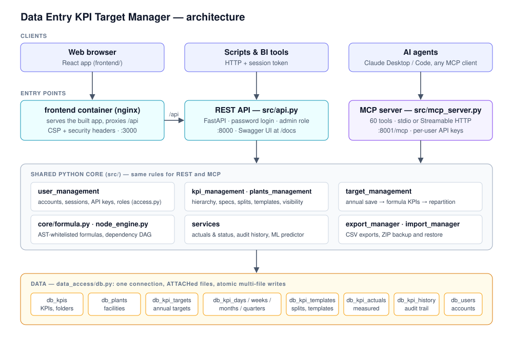
/api proxy (Vite in development, nginx in containers). The MCP server calls the same Python core directly.What happens when you save a target
- 1SaveAn annual value is saved from the web app, the REST API or an MCP tool.
- 2Validate & auditThe value is checked, and the change is recorded under the signed-in user or API-key owner.
- 3RepartitionA daily series for the year is built from the KPI's split template.
- 4Roll upDays are aggregated into ISO weeks, months and quarters.
- 5FormulasEvery formula KPI that depends on this one is recomputed, in topological order.
- 6CommitAll database files are written in one atomic transaction.
Getting started
There are two ways to run the application: a local development setup (Python and Node), or the container stack (Podman or Docker Compose).
Option A: local development
Requires Python 3.12+ and Node 22+. On macOS or Linux, replace .venv/Scripts/python with .venv/bin/python.
- Create a virtual environment and install the backend dependencies:
python -m venv .venv .venv/Scripts/python -m pip install -r requirements.txt - Start the API on
http://127.0.0.1:8000, with Swagger at/docs.dev_backend.pyuses a throwaway database in.dev-data/; to work ondatabases/instead, runpython -m uvicorn src.api:app..venv/Scripts/python scripts/dev_backend.py - Install and start the web app on
http://localhost:5173. Vite proxies/apito the backend.npm --prefix frontend install npm --prefix frontend run dev - Open the app and create the first account. It becomes the administrator.
- Optional: load the demo data used in this guide (two plants, five KPIs including a formula KPI, a seasonal split, and two years of targets):
.venv/Scripts/python scripts/seed_demo.py
Option B: containers
podman compose up --build -ddocker compose up --build -d works the same way. Copy .env.example to .env to change settings.
| Service | URL | Notes |
|---|---|---|
frontend | http://localhost:3000 | nginx serves the app and proxies /api to the backend. FRONTEND_PORT changes the port. |
backend | http://127.0.0.1:8000 | Loopback only by default (BACKEND_BIND_ADDRESS). Runs the database migrations. |
mcp_server | http://127.0.0.1:8001/mcp | Loopback only by default (MCP_BIND_ADDRESS). Needs an API key, and starts once the backend is healthy. |
The containers run as a non-root user (uid 1000) and have healthchecks. Data lives in the kpi_databases volume.
Hyper-V sometimes reserves port 3000. Check with netsh interface ipv4 show excludedportrange protocol=tcp. If 3000 is in a listed range, set FRONTEND_PORT=8080.
Key concepts
- Facility (plant)
- A site you set targets for. Each has a chart colour and can be hidden.
- Folder
- A node in the KPI hierarchy. Folders can be nested.
- KPI
- A measured indicator, such as Units Produced or OEE, with its definition (unit, aggregation type, direction, thresholds…).
- Target scenario
- One of up to 10 parallel targets per KPI, e.g. Budget and Stretch. Each has its own annual value and periodic series.
- Annual target
- The one number you enter, per KPI, facility, year and scenario.
- Periodic targets
- The day, ISO-week, month and quarter targets the engine derives from the annual target.
- Split template
- A reusable seasonal curve: period weights plus a day shape, optionally limited to specific years.
- Formula KPI
- A KPI calculated from other KPIs, e.g.
[1] / [2]. It can't be typed in. - Actuals
- Measured values per KPI, facility and day, compared with a target to give a performance status (API and MCP).
Aggregation types
A KPI's aggregation type decides what its annual target means, and how days roll up into longer periods.
| Type | The annual target is… | Days → week / month / quarter | Example |
|---|---|---|---|
| Sum | a total; the periods add up to it | sum | Units Produced, Hours Worked |
| Count | a total; the periods add up to it | sum | Customer Complaints |
| Average | a level the year should average | mean | OEE %, Scrap Rate |
| Last | a level | last day of the period | Headcount at period end |
| Min / Max | a level | minimum / maximum day | Stock floor, capacity ceiling |
Sum and Count are additive; the others are level types. The legacy name Incremental is still accepted and means Sum.
Repartition: annual → day, week, month, quarter
Every saved annual target is turned into a daily series for its year, in four steps (target_management/repartition.py). The series is then rolled up into ISO weeks (2026-W05), months and quarters.
- 1 Day shapeGives every day a relative weight: even, progressive ramp (0.8→1.2), weekday bias (×1.3 weekdays, ×0.7 weekends), sinusoidal, or event-based.
- 2 Period weightsMonth, Quarter or ISO-week weights decide each period's share of the year. A weight of 0 really means 0.
- 3 EventsDate ranges with a multiplier and/or an addition, e.g. a two-week shutdown with multiplier 0.
- 4 ReconcileThe series is scaled so its sum (additive) or mean (level) equals the annual figure exactly. No day goes negative.
Where the settings come from
- the split template assigned to the KPI, if it covers the year;
- a template or settings saved on the annual record by older API clients;
- the KPI's default profile;
- otherwise, an even split. The UI's “Default even split” means exactly that.
Worked example
The demo KPI Units Produced (Sum) has a 2026 Budget of 120,000 at North Plant and uses the Demo Seasonal (Month) template, with a uniform day shape. January's weight is 6%, so January gets 7,200, spread evenly over 31 days: about 232.3 per day. ISO week 2026-W01 contains only 1–4 January, so it gets 4 days, about 929.
| Month | Weight | Target | Month | Weight | Target |
|---|---|---|---|---|---|
| January | 6% | 7,200 | July | 7% | 8,400 |
| February | 6% | 7,200 | August | 5% | 6,000 |
| March | 8% | 9,600 | September | 9% | 10,800 |
| April | 8% | 9,600 | October | 10% | 12,000 |
| May | 9% | 10,800 | November | 11% | 13,200 |
| June | 9% | 10,800 | December | 12% | 14,400 |
The quarters roll up to Q1 24,000 · Q2 31,200 · Q3 25,200 · Q4 39,600, which is exactly what GET /kpis/1/periodic-targets?period_type=Quarter returns. For a level KPI such as OEE (Average, 85%), the weights are relative levels instead. They are normalised so that the day-weighted average of the year is still 85.
Leap years (366 days), ISO weeks that belong to the neighbouring year (29–31 December can be in W01; 1–3 January in W52 or W53), weeks keyed W01..W53 independently of the year, and all-zero weights. All of these are covered by tests.
Signing in
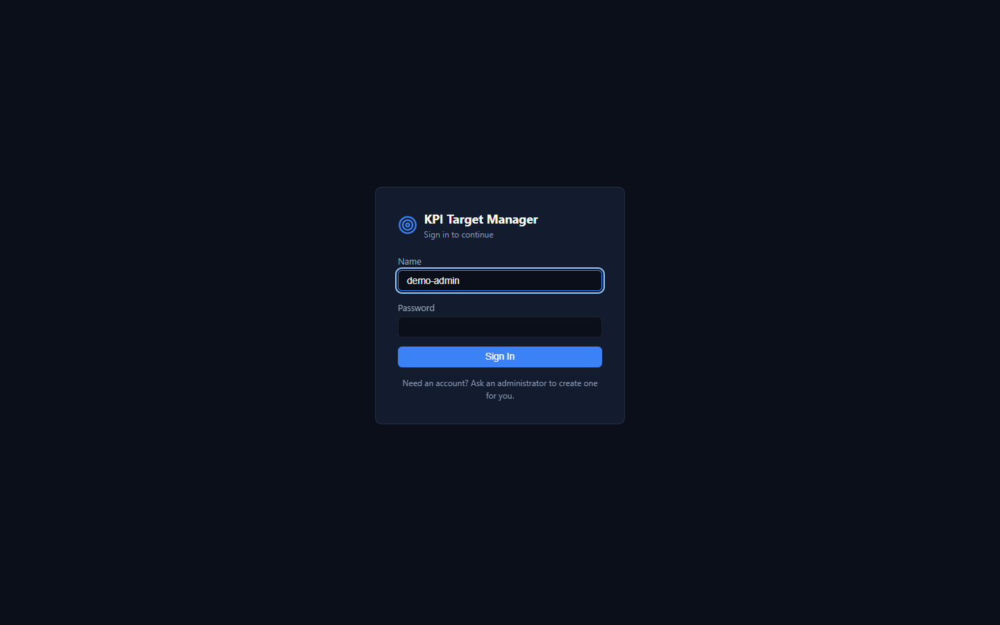
- Sign-in card. On a fresh install it says Create the first account instead; that account becomes the administrator.
- Name: your account name, not an email address.
- Password: at least 8 characters.
- Sign In. Repeated failures are throttled (HTTP 429).
- First run. The first account becomes the administrator, and self-registration then closes. The administrator creates the other accounts under Data Utilities.
- Open registration. With
ALLOW_REGISTRATION=true, a Register tab appears and anyone can create a regular (non-admin) account. - Sessions last 30 days. Changing your password signs out your other sessions. Deactivating an account revokes its sessions and API keys.
- You are only signed out on a real
401. If the backend is unreachable, the app shows a retry screen instead.
Finding your way around
The header is the same on every screen. The year and facility you pick here drive Target Entry and Analysis.
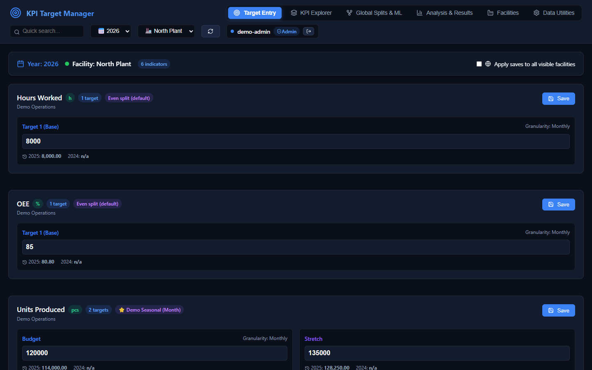
- Workspace tabs: Target Entry, KPI Explorer, Global Splits & ML, Analysis & Results, Facilities, Data Utilities.
- Quick search filters the Target Entry cards by KPI name or folder path.
- Year: three years back and six ahead, plus any year that has data.
- Facility: the plant whose targets you see and edit.
- Reload data refetches everything from the server, for example after an agent made changes over MCP.
- Your account, with the Admin badge for administrators and the sign-out button.
Target Entry
Enter annual targets for the selected year and facility. Each KPI enabled for that facility gets a card.
- Context: the year, the facility and how many KPIs are listed (after the search filter).
- Apply saves to all visible facilities: when ticked, Save writes the same values to every visible facility, after a confirmation.
- Unit of measure from the KPI definition.
- Number of target scenarios for this KPI (1–10).
- Split in use. Even split (default) means no template is assigned. A ⭐ name means a split template; you assign it in KPI Explorer.
- Annual target. A blank box is left unchanged; it is never saved as 0.
- Reference values: the same scenario for the previous two years.
- Save stores the value, recalculates the day, week, month and quarter targets, and recalculates every formula KPI that uses this one.
Several target scenarios
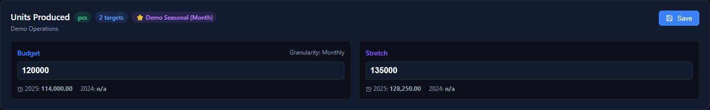
- 2 targets: this KPI has two scenarios.
- Assigned split template (⭐ Demo Seasonal (Month)). It distributes both scenarios.
- Budget: scenario 1, named in KPI Explorer.
- Stretch: scenario 2. Each scenario has its own periodic series.
- Last two years of the Stretch scenario.
- Save writes every scenario on the card in one transaction.
Formula KPIs are read-only
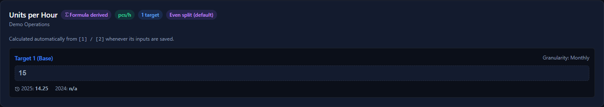
- Formula derived: hover over it to see the formula.
- The value is calculated automatically from the inputs whenever they are saved.
- Read-only, and the card has no Save button.
Walkthrough: enter next year's targets
- Pick the year and the facility in the header. If that year has no data yet, the boxes are empty, and the previous years are shown underneath for reference.
- Type the annual values. Leave a box blank to keep its current value.
- To set the same values everywhere, tick Apply saves to all visible facilities. The button then reads Save to all facilities, and a confirmation comes first.
- Click Save on each card. The button shows Saved & repartitioned, and dependent formula KPIs update right away.
- Check the result in Analysis & Results, or fine-tune the curve in Global Splits. Editing a template recalculates every KPI that uses it.
Only KPIs enabled for the selected facility are listed. Check the quick search box, the KPI's facility enablement, and whether the KPI was deleted.
KPI Explorer
Build the hierarchy and define each KPI. The left side is the folder tree; selecting a KPI opens its definition on the right.
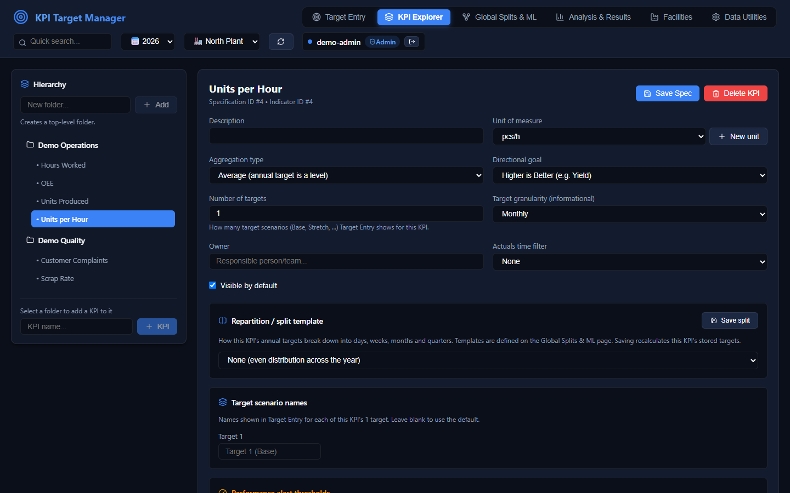
- New folder. It's created at the top level, or inside the selected folder.
- Folder tree. Click a folder to select it, or a KPI to open it. The tree works with the keyboard.
- The KPI being edited.
- New KPI in the selected folder.
- Save Spec stores every definition field below. Edits survive background refreshes until you save.
- Delete KPI (with confirmation) hides it everywhere. Its targets and history are kept.
- Unit of measure, from the shared registry. New unit adds one.
- Aggregation type: Sum, Count, Average, Last, Min or Max. See Aggregation types.
- Directional goal: higher is better, lower is better, or a range. It drives the performance status.
- Number of targets (1–10): how many scenarios Target Entry shows.
- Target granularity: informational only; it doesn't change the calculation.
- Actuals time filter: evaluate the status over a rolling window of N days.
- Split template for this KPI. Save split recalculates its stored targets at once.
Definition fields
| Field | Meaning |
|---|---|
| Description | Shown under the KPI name in Target Entry. |
| Unit of measure | From the shared units registry (GET/POST /units-of-measure). |
| Aggregation type | Whether the annual target is a total or a level. Changing it recalculates the stored targets. |
| Directional goal | Higher is Better, Lower is Better, or Range (uses the min and max targets). |
| Number of targets | Scenarios per KPI, 1–10. |
| Target scenario names | Your names for each scenario, e.g. Budget and Stretch. Blank means Target N. |
| Target granularity | Informational only. |
| Owner | The person or team responsible. |
| Actuals time filter | None, or a rolling window of N days for the performance status. |
| Visible by default | A flag that API clients can filter on (GET /kpis?only_visible=true, MCP list_kpis). The web app ignores it and uses facility enablement instead. |
| Performance alert thresholds | Warning and error margins (0–1, relative to the target). Range KPIs also have min and max targets. |
| Formula | Makes the KPI calculated. See below. |
Formulas
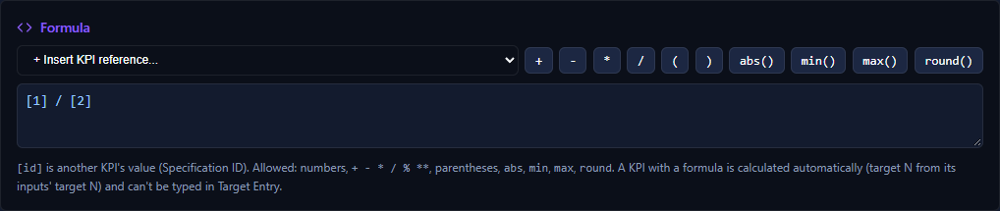
- Insert KPI reference adds
[id]for the chosen KPI at the cursor. - Operators and parentheses.
- Functions:
abs,min,max,round. - Expression. Here, Units per Hour =
[1] / [2](Units Produced ÷ Hours Worked). - Syntax reminder. Leave the box empty for a manually entered KPI.
| Allowed | Example |
|---|---|
| KPI references by specification ID | [1], [12] |
Numbers and + - * / % **, parentheses, unary minus | ([1] - [5]) / [2] * 100 |
abs, min, max, round | max([2], 1), round([1] / [2], 2) |
- Safe. Formulas are parsed with Python's
astand evaluated by a strict whitelist; nothing reacheseval. Names, attributes, subscripts, strings and keyword arguments are rejected. Formulas are capped at 2,000 characters and 300 nodes, exponents are bounded, and division by zero gives 0. - Validated on save. The syntax must be valid, every referenced KPI must exist, and there may be no self-reference and no cycle. A cycle error names the loop, e.g.
[2] -> [4] -> [2]. - Per scenario. Target N of a formula KPI is computed from target N of its inputs.
- Daily values are computed day by day from the inputs' daily series, then scaled to the annual value, so a ratio follows its inputs' seasonality.
- Dependency order. A save recomputes every dependent formula KPI, directly or transitively dependent, in topological order and in the same transaction.
Scenario names, thresholds and facility enablement
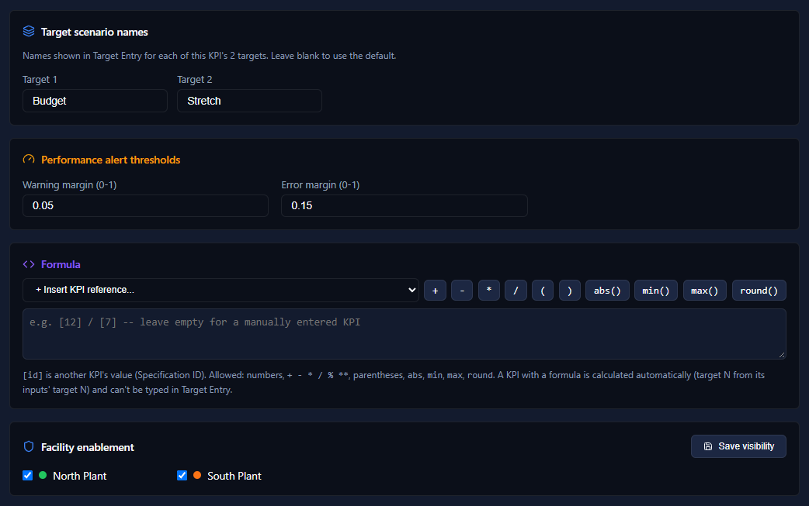
- Target scenario names: one box per scenario.
- Warning and error margins for the performance status. Defaults: 0.05 and 0.15.
- Formula: empty, so this is a manually entered KPI.
- Facility enablement: untick a facility to hide the KPI from its Target Entry.
- Save visibility: enablement is saved separately from the definition.
Audit history
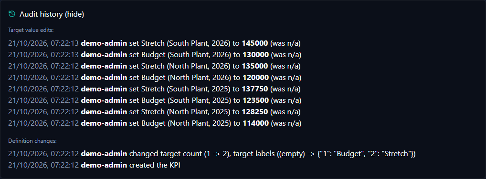
- Audit history opens and closes the panel.
- Target value edits: who set which scenario, for which facility and year, to what (and the previous value).
- Definition changes: which fields changed, old → new.
The user is always taken from the session or API key, never from the request. Re-saving identical values isn't recorded.
Global Splits
A split template is a reusable seasonal curve. It combines period weights (month, quarter or ISO week) with a day shape inside each period, and it can be limited to specific years.
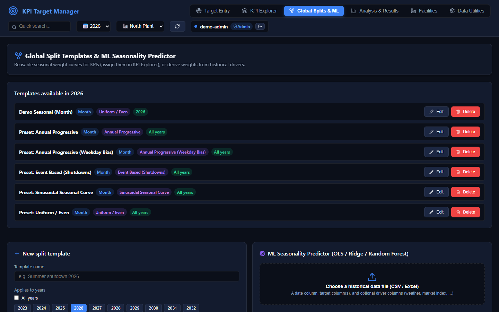
- Template name. The list shows the templates that cover the header's year.
- Weights per Month, Quarter or Week.
- Day shape inside each period.
- Years it applies to, or All years.
- Edit opens the template in the form below.
- Delete, after a confirmation. Its KPIs fall back to an even split and are recalculated.
- New split template form.
- ML Seasonality Predictor. See the next chapter.
Editing a template
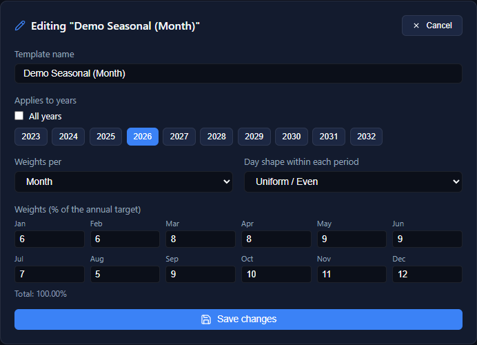
- Cancel discards the edits.
- Template name.
- Applies to years: toggle years, or tick All years.
- Weights per Month, Quarter or ISO week. Week weights are year-agnostic.
- Day shape within each period: uniform, progressive, weekday bias, sinusoidal, or event-based.
- Weights in % of the annual target, one per period.
- Running total. Weights that don't add up to 100% are scaled to 100%.
- Save changes recalculates every KPI that uses the template.
Presets
Five presets are seeded once: Uniform / Even, Annual Progressive, Annual Progressive (Weekday Bias), Sinusoidal Seasonal Curve and Event Based (Shutdowns). Over the API, GET /global-splits/curve-preview (MCP: get_curve_weight_suggestions) turns a curve into starting weights.
What triggers a recalculation
Assigning or clearing a template on a KPI; editing a template's weights, day shape or years; changing which KPIs it's linked to; and deleting it. Each recalculates the stored targets of every affected KPI. A template applies only to the years it covers.
ML Seasonality Predictor
Instead of guessing weights, derive them from history. Upload a CSV or Excel file with a date column, one or more target columns, and optionally driver columns that explain the seasonality (temperature, promotions, a market index…).
Example input (the file used for the screenshots):
date,units_sold,avg_temp_c,promo_days
2024-01-01,297,1.8,0
2024-01-02,284,1.8,0
2024-01-03,295,0.4,0
…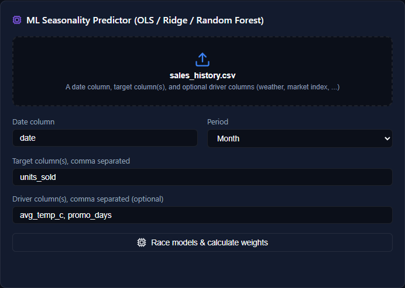
- Choose a file (CSV, XLSX or XLS). It is capped at
MAX_UPLOAD_MB, 1M rows and 200 columns. - Date column name.
- Period: Month, Quarter or ISO week. This is the key type of the resulting weights.
- Target column(s), comma separated. Several targets are averaged.
- Driver column(s) (optional). Without drivers, the historical profile is used directly.
- Race models & calculate weights. It runs in a worker thread, so the server stays responsive.
How the winner is chosen
- Aggregate per period. Targets are averaged across years, so a period present in more years isn't over-weighted. Drivers are averaged too.
- Normalise. Each target becomes a share of its mean (1.2 means 20% above an average period). Drivers are min-max scaled.
- Race. OLS, Ridge (α = 1) and a Random Forest (100 trees, depth ≤ 5) are fitted. The best R² wins after a complexity penalty: the forest loses 0.2 below 24 periods and 0.1 below 50, and OLS loses 0.05 when there are more drivers than half the periods.
- Uncertainty. 100 Monte Carlo runs perturb the drivers and add residual noise. The 5th and 95th percentiles form the band.
- Weights. The prediction becomes percentages summing to 100, keyed like template weights (
January,Q1,W01).
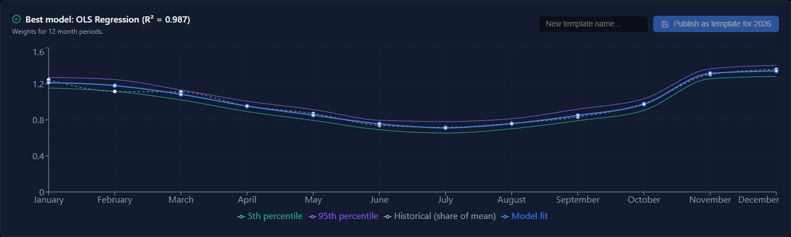
- Best model and its R² on the seasonal profile.
- How many periods the weights cover.
- Publish as template creates a split template for the header's year, using the weights as they are.
- Chart: historical profile (dashed), model fit, and the 5–95% Monte Carlo band.
- Legend. Hover over the chart to see the values, rounded to 3 decimals.
Use at least two full years of history, so every period has more than one sample. Pick drivers you can explain; with few periods the simpler models win on purpose. Publishing creates a template; assign it to KPIs in KPI Explorer.
Analysis & Results
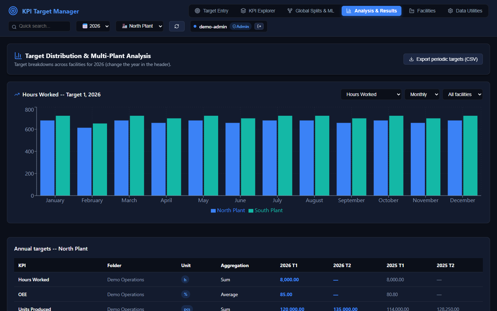
- Export periodic targets (CSV) downloads the chart's data.
- KPI to chart.
- Granularity: daily, weekly, monthly, quarterly or yearly.
- Facility filter: one facility, or all side by side.
- Target allocation for the header's year (scenario 1), in each facility's colour.
- Legend: one series per facility.
- Annual targets for the header's facility: every KPI and scenario, this year and last year.
Seeing the seasonal curve
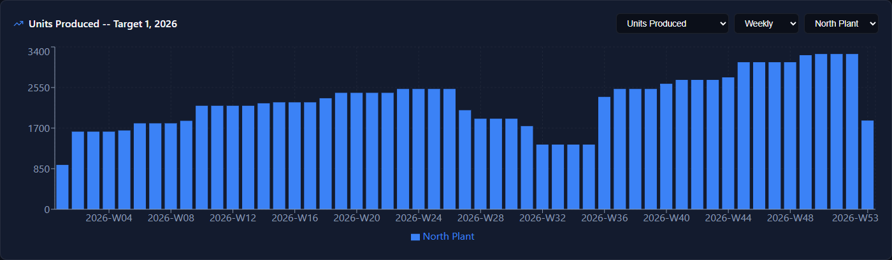
- Units Produced, Budget, 2026, at North Plant.
- Weekly granularity, in ISO weeks.
- The monthly weights of Demo Seasonal (Month) show up as steps. W01 is short (1–4 January), and 2026 has a W53.
Facilities
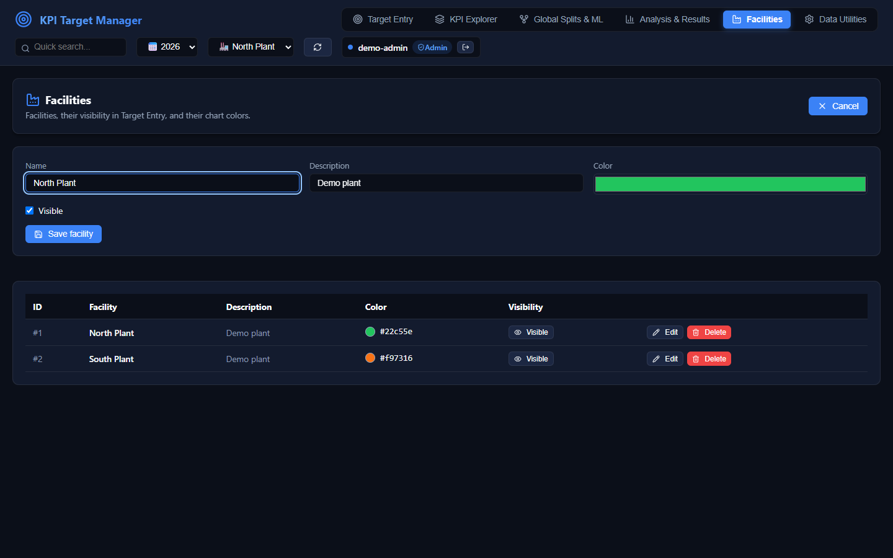
- Add facility. While the form is open, this button reads Cancel.
- Name, which must be unique.
- Description.
- Chart colour, used in Analysis and next to the facility name.
- Save facility.
- Visible / Hidden. Hidden facilities are skipped by Apply saves to all visible facilities.
- Edit opens the form above.
- Delete. A facility that has targets or actuals needs a second confirmation, which also deletes its data.
Data Utilities & accounts
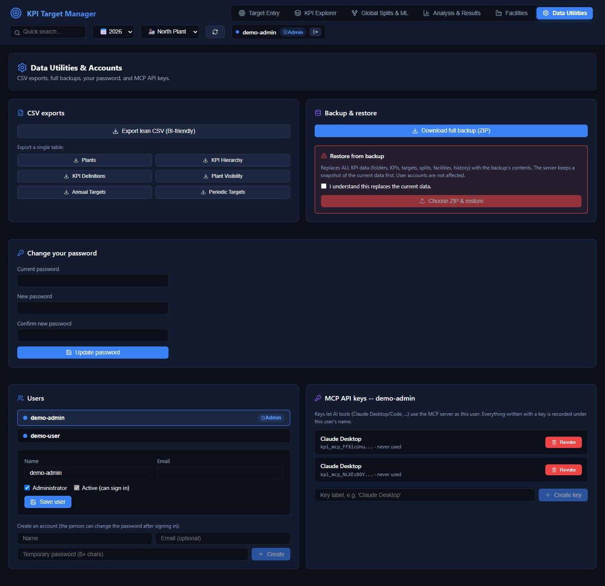
- Lean CSV: every periodic target as flat rows for BI tools.
- Single-table exports: plants, hierarchy, definitions, visibility, annual and periodic targets. Human-readable, not restorable.
- Download full backup (ZIP): every KPI table, 1:1, with NULLs preserved. Accounts are excluded.
- Restore (admins only). Tick the confirmation, then choose a ZIP. It replaces all KPI data.
- Change your password. This needs the current password, and signs out your other sessions.
- Users (admins only). Select a user to edit them.
- User editor: name, email, administrator, active, and a password reset.
- Create an account with a temporary password.
- MCP API keys of the selected user: prefix, last use, and Revoke.
- Create key. The raw key is shown once; copy it then.
Roles
| Action | Administrator | Regular user |
|---|---|---|
| Enter targets, edit KPIs, splits, facilities, run the ML predictor | Yes | Yes |
| CSV exports, download a backup | Yes | Yes |
| Restore a backup | Yes | No |
| Change own password, edit own name, email and colour | Yes | Yes |
| Create users, edit others, grant or remove admin, deactivate | Yes | No |
| Reset another user's password | Yes | No |
| Create and revoke own API keys | Yes | Yes |
| Manage other users' API keys | Yes | No |
The last active administrator can't be demoted or deactivated. The same rules (user_management/access.py) apply to the REST API and the MCP server.
Backup and restore in detail
- Validate. Restore checks the ZIP: known file names, a bounded uncompressed size, and every column must exist.
- Snapshot. The current databases are copied to
databases/backups/pre-restore-<timestamp>/. - Replace. The contents of every table in the backup are replaced, in one transaction across all database files. Tables missing from an older backup are left untouched, and user accounts are never touched.
Actuals and performance status
API & MCP The web app has no screen for actuals yet. Record measured values through the REST API or the MCP tools record_actual, list_actuals and get_performance_status.
| Direction | on_track | warning | out_of_range |
|---|---|---|---|
| Higher is better | actual ≥ target | within the warning margin below the target | further below |
| Lower is better | actual ≤ target | within the warning margin above the target | further above |
| Range | inside [min, max] | within error margin × span outside the range | further out |
Margins come from the KPI's thresholds (defaults: warning 0.05, error 0.15) and are relative to |target|, so negative targets work. The trend is the least-squares slope of the actuals. With a rolling time filter, only the last N days count.
Record a value, then ask for the status (bash; $TOKEN comes from signing in):
curl -X POST http://127.0.0.1:8000/actuals \
-H "Authorization: Bearer $TOKEN" -H "Content-Type: application/json" \
-d '{"kpi_id": 3, "plant_id": 1, "measurement_date": "2026-10-20", "actual_value": 83.2}'
curl "http://127.0.0.1:8000/kpis/3/status?plant_id=1&target_value=85" \
-H "Authorization: Bearer $TOKEN"Response:
{"kpi_id": 3, "plant_id": 1, "status": "warning", "diff_pct": -2.12, "actual_count": 1,
"latest_actual": 83.2, "target": 85.0, "trend_slope": 0.0, "trend_direction": "stable"}target_valueThe status endpoint doesn't look up the KPI's stored target. If target_value is left out, it compares against a baseline of 100.
REST API
The REST API is the web app's backend, and you can use it directly from scripts and BI tools. Interactive documentation is at /docs (Swagger UI), and the OpenAPI schema at /openapi.json.
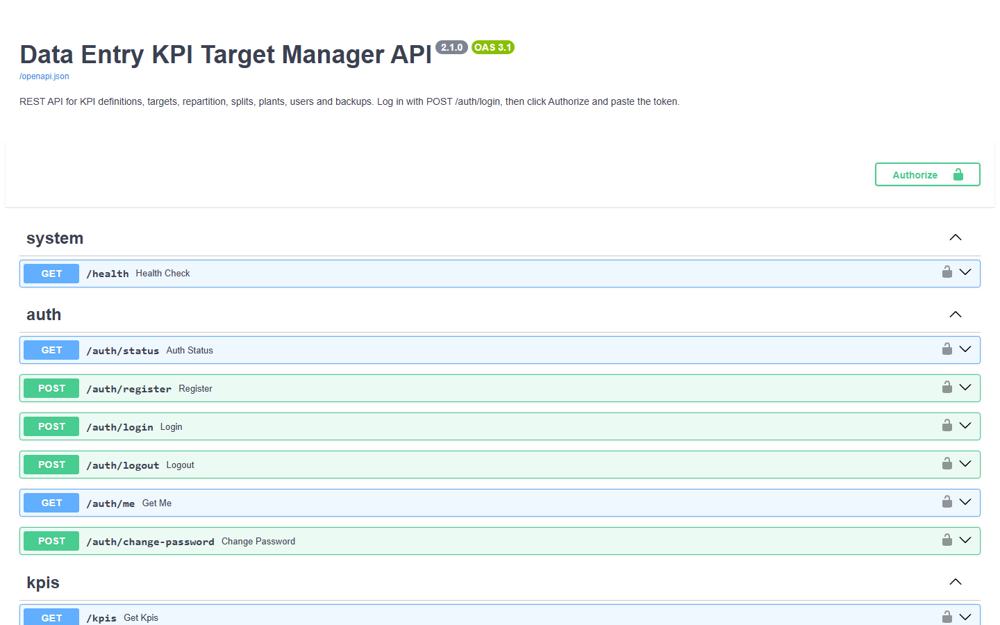
- API title and version, with a link to
/openapi.json. - Authorize. Sign in with
POST /auth/login, then paste the token here to try the protected routes. - Route groups (tags): system, auth, kpis, plants, splits, targets, actuals, analysis, templates, data, users.
POST /auth/loginreturns{token, expires_at, user}.
Authenticate and save a target
TOKEN=$(curl -s -X POST http://127.0.0.1:8000/auth/login \
-H "Content-Type: application/json" \
-d '{"name": "demo-admin", "password": "demo-admin-pass-2026"}' | python -c "import sys, json; print(json.load(sys.stdin)['token'])")
# Budget and Stretch for KPI 1 at plants 1 and 2, year 2027
curl -X POST http://127.0.0.1:8000/targets/annual \
-H "Authorization: Bearer $TOKEN" -H "Content-Type: application/json" \
-d '{"year": 2027, "plant_id": [1, 2],
"targets_data_map": {"1": {"targets": [{"target_number": 1, "target_value": 130000},
{"target_number": 2, "target_value": 142000}]}}}'
# Monthly split of the result
curl "http://127.0.0.1:8000/kpis/1/periodic-targets?plant_id=1&year=2027&period_type=Month" \
-H "Authorization: Bearer $TOKEN"These are the demo credentials from .env.example, for local development only. period_type is one of Day, Week, Month, Quarter or Year.
Route groups
| Tag | Routes | Covers |
|---|---|---|
| system | 1 | /health |
| auth | 6 | status, register, login, logout, me, change-password |
| kpis | 16 | KPIs and folders, definition updates, units, visibility, split assignment, status, history |
| plants | 4 | facility CRUD |
| splits | 8 | split templates, linked KPIs, curve preview |
| targets | 9 | annual entry, saves, available scenarios, periodic and lean targets (2 legacy routes are deprecated) |
| actuals | 2 | record and list measured values |
| analysis | 1 | the ML seasonality predictor (multipart/form-data) |
| templates | 8 | KPI definition templates and applying them to folders |
| data | 5 | years, CSV and lean exports, backup ZIP, restore |
| users | 7 | users, password resets, API keys |
| Total | 67 | The full list is in api_reference.md. |
Errors come back as {"detail": "…"} with a meaningful status: 400 validation, 401 not signed in, 403 not allowed, 404 not found, 413 upload too large, 429 too many sign-in attempts. Tracebacks are never sent to clients.
MCP server for AI agents
The MCP server lets AI agents (Claude Desktop, Claude Code, or any MCP client) work with the same data and rules as the web app. It's built on the official mcp SDK and exposes 60 tools. A parity test fails if a REST route has no matching tool.
| stdio (default) | Streamable HTTP | |
|---|---|---|
| Start | The client launches python src/mcp_server.py | python -m src.mcp_server --http, or the mcp_server container |
| Endpoint | stdin/stdout | http://127.0.0.1:8001/mcp |
| Authentication | None: whoever can start it already has the database files | Authorization: Bearer <api key> on every request |
| Writes recorded as | $MCP_STDIO_USER (default mcp_agent) | the API key's owner. Callers can't claim another name. |
| Admin tools | Allowed unless MCP_STDIO_ADMIN=false | Only if the key's owner is an admin. The role is re-read on every call. |
Connect a client
Claude Code, local over stdio:
claude mcp add kpi --env MCP_STDIO_USER=claude-code -- /path/to/dataentryKPI/.venv/bin/python /path/to/dataentryKPI/src/mcp_server.pyClaude Desktop, in claude_desktop_config.json:
{
"mcpServers": {
"kpi": {
"command": "C:\\path\\to\\dataentryKPI\\.venv\\Scripts\\python.exe",
"args": ["C:\\path\\to\\dataentryKPI\\src\\mcp_server.py"],
"env": { "MCP_STDIO_USER": "claude-desktop" }
}
}
}Shared, over HTTP. Create a key under Data Utilities → MCP API keys first:
claude mcp add --transport http kpi http://127.0.0.1:8001/mcp --header "Authorization: Bearer kpi_mcp_..."Tools
| Group | Tools | Examples |
|---|---|---|
| KPIs and hierarchy | 13 | get_kpi_tree, create_kpi_indicator, update_kpi_spec, set_kpi_visibility, get_kpi_definition_history |
| Facilities | 4 | list_plants, create_plant, update_plant, delete_plant |
| Targets | 9 | save_annual_targets, get_periodic_targets, get_periodic_targets_all_plants, get_lean_targets |
| Actuals | 3 | record_actual, list_actuals, get_performance_status |
| Split templates | 10 | create_global_split, set_kpi_global_split, get_curve_weight_suggestions |
| ML predictor | 1 | analyze_seasonality (CSV text, or a base64 Excel file) |
| KPI templates | 8 | create_template, add_template_indicator, apply_template |
| Export and backup | 3 | export_csv, export_backup, restore_backup (admin) |
| Users and API keys | 9 | whoami, create_user (admin), create_api_key, change_my_password |
Tools carry read-only and destructive annotations, so clients can ask before running a destructive one. Errors reach the model as readable messages. See mcp.md for every tool.
Things to ask an agent
- “Set the 2027 Budget of Units Produced at North Plant to 130,000 and show me the quarterly split.”
- “Which KPIs at South Plant have no 2027 target yet?”
- “Analyse this sales history with temperature as a driver and publish the weights as a template for 2027.”
- “Who changed the OEE definition last month, and what changed?”
Configuration
Set these as environment variables, or in .env for compose (see .env.example).
| Variable | Default | Purpose |
|---|---|---|
KPI_DB_DIR | ./databases | Where the SQLite files live |
KPI_EXPORT_DIR | ./csv_exports | Where CSV exports are written |
CORS_ORIGINS | localhost:3000 and :5173 | Origins allowed to call the REST API directly |
ALLOW_REGISTRATION | false | Let anyone register non-admin accounts after the first one |
MAX_UPLOAD_MB | 20 | Size cap for ML datasets and backup restores (REST and MCP) |
LOG_LEVEL | INFO | Backend log level |
API_HOST / API_PORT | 127.0.0.1 / 8000 | Bind address for python src/api.py (dev_backend.py reads API_PORT) |
MCP_TRANSPORT | stdio | http does the same as --http |
MCP_HOST / MCP_PORT | 127.0.0.1 / 8001 | HTTP transport bind address |
MCP_PUBLIC_URL | http://localhost:8001 | URL clients use, advertised in the auth metadata |
MCP_ALLOWED_HOSTS | localhost:*,127.0.0.1:* | Host headers accepted on a non-loopback bind (DNS-rebinding protection) |
MCP_STDIO_USER | mcp_agent | Who stdio writes are attributed to |
MCP_STDIO_ADMIN | true | Whether the local stdio operator may use the admin tools |
FRONTEND_PORT | 3000 | Compose: host port of the web app |
BACKEND_BIND_ADDRESS, MCP_BIND_ADDRESS | 127.0.0.1 | Compose: where the API and MCP ports are published. 0.0.0.0 exposes them. |
VITE_API_URL | (empty) | Frontend build-time API base. Leave it empty to use the same-origin /api proxy. |
SEED_API_URL, DEMO_* | see .env.example | seed_demo.py only. Development credentials. |
Outside containers, user_config/settings.json can also set the data directories (database_base_dir, csv_export_base_dir). Environment variables win over it.
Operations
Data files
Data is stored in eleven SQLite files in KPI_DB_DIR: db_kpis, db_kpi_targets, db_kpi_days, db_kpi_weeks, db_kpi_months, db_kpi_quarters, db_plants, db_users, db_kpi_templates, db_kpi_history and db_kpi_actuals.
- Every connection has a busy timeout and enforces foreign keys. Writes that span several files commit atomically.
- Migrations run on every start and repair databases created by earlier versions (old CHECK constraints, dangling foreign keys, untyped columns). In compose, the backend migrates and the MCP server waits for it.
- In compose, everything lives in the
kpi_databasesvolume. Back it up like any volume, or use the in-app ZIP backup.
Undoing a restore
Each restore first copies the databases to databases/backups/pre-restore-<timestamp>/. To roll back, stop the backend and the MCP server, copy those files back into the database directory, and start again.
Upgrading from 2.0 containers
The images no longer run as root. If the existing volume was created by root, give it to uid 1000 once:
podman run --rm -v dataentrykpi_kpi_databases:/data alpine chown -R 1000:1000 /dataExposing the stack
- Browsers only need the frontend port; it proxies
/api. Keep the API and MCP ports on loopback unless something else must reach them. - When MCP listens on a non-loopback address, add your host name to
MCP_ALLOWED_HOSTSand setMCP_PUBLIC_URL. - The backend trusts the proxy's forwarded client address, which the login rate limiter uses. That's safe only while the backend port isn't public.
- nginx sends a CSP and other security headers. Put TLS in front of it, for example with a reverse proxy.
Regenerating this guide's screenshots
The screenshots and the callout positions are generated together from a running, seeded development stack. The positions are measured from the live page, so the callouts stay on target:
uv run --no-project --with playwright python scripts/capture_screenshots.pyIt writes docs/images/*.png and docs/guide/annotations.js. It needs dev_backend.py, the Vite dev server and seed_demo.py to be running first, and it drives the installed Microsoft Edge.
Troubleshooting & FAQ
The sign-in screen says registration is closed
That's by design: after the first (admin) account exists, an administrator creates the other accounts under Data Utilities → Users. To let people register regular accounts themselves, start the backend with ALLOW_REGISTRATION=true.
I was signed out unexpectedly
You are only signed out on a real 401: the session expired (after 30 days), your password was changed elsewhere, an admin reset it, or your account was deactivated. Network errors and backend restarts show a retry screen instead.
A KPI doesn't appear in Target Entry
Check, in this order: the quick search box; the KPI's facility enablement in KPI Explorer; whether the KPI was deleted (deleting is soft, but it hides the KPI everywhere).
My formula is rejected
The message says why: a syntax error, an unknown KPI id, a self-reference, or a dependency cycle (e.g. [2] -> [4] -> [2]). References use the KPI's Specification ID, shown under its name in KPI Explorer.
Why did my monthly targets change when I didn't touch them?
Something they depend on changed: the split template was edited, assigned or deleted, the aggregation type changed, or (for a formula KPI) one of its inputs was saved. All of these recalculate the stored targets. The audit history shows the target edits.
The weights of my template don't add up to 100
That's fine: they are scaled to 100% when the targets are calculated. The running total under the weight grid shows the current sum.
Port 3000 doesn't work on Windows
Hyper-V may have reserved it. Run netsh interface ipv4 show excludedportrange protocol=tcp, and if 3000 is in a range, set FRONTEND_PORT=8080 in .env.
The containers fail with “permission denied” on the database after an upgrade
The volume was created by root under 2.0. Run the one-time chown from Upgrading from 2.0 containers.
The MCP client can't connect over HTTP
Every request needs Authorization: Bearer <api key>. Check that the key isn't revoked and that its owner is active. If the server isn't on loopback, add the host name you connect with to MCP_ALLOWED_HOSTS.
The performance status compares against 100
Pass the target explicitly: GET /kpis/{id}/status?plant_id=1&target_value=85 (MCP: get_performance_status with target_value). Without it, the baseline is 100.
The ML predictor rejects my file
Check the column names (they're case-sensitive) and that the date column parses. Also check the limits: MAX_UPLOAD_MB, 1M rows and 200 columns.
Glossary
- Additive / level
- Additive types (Sum, Count) split a total across periods. Level types (Average, Last, Min, Max) treat the target as a level.
- Audit trail
- The record of every definition change and every changed target value, with the user and the time.
- Day shape (profile)
- How a period's share is spread over its days.
- Driver
- An explanatory column in ML input data, such as temperature or promotions.
- ISO week
- A Monday-to-Sunday week numbered per ISO 8601 (
W01..W53). Week 1 contains the year's first Thursday. - Lean export
- Every periodic target as one flat CSV row, for BI tools.
- MCP
- Model Context Protocol, the open protocol AI clients use to call tools.
- Reconciliation
- Scaling the daily series so it matches the annual target exactly.
- Repartition logic
- Which period the weights are keyed by: Month, Quarter, Week or Year.
- Soft delete
- Hiding a KPI everywhere while keeping its targets and history.
- Specification ID
- A KPI's id, used in formulas as
[id]and in the API askpi_id. - Topological order
- Recomputing formula KPIs so every KPI is calculated after the KPIs it depends on.
More documentation: user guide · core logic · architecture · REST API reference · MCP server · database schema · changelog. MIT licensed.